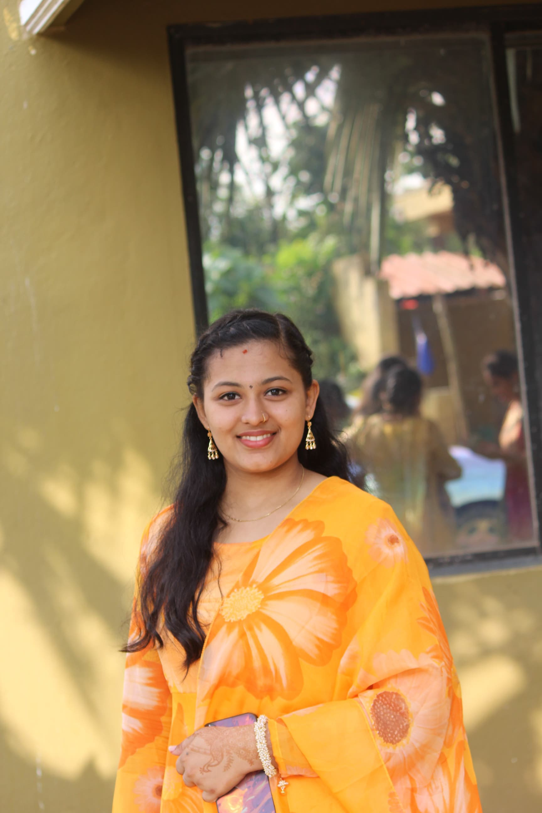

Aspiring Engineer | AI Enthusiast | Creative Thinker
I’m Sanmaya I K, a Computer Science Engineering student passionate about AI-powered solutions, innovation, and creativity. I love designing impactful projects, organizing events, and contributing to the tech community through IEEE and other clubs.
Developed an AI-powered real-time safety platform that detects emergency situations using voice commands, tone analysis, shake triggers, and motion gestures, triggering instant alerts with live location tracking through a Progressive Web Application (PWA).
Designed a computer vision–based PPE detection system to automatically monitor safety equipment compliance and enhance workplace safety in industrial environments.
Implemented a complaint management system to efficiently register, track, and resolve customer issues, improving support workflow and reducing response time.
| Date of Birth | 02-Nov-2005 |
| Gender | Female |
| Father's Name | Mr. Ishwara Prasad U S |
| Mother's Name | Mrs. Madhura I Prasad |
| Address | Shree Saraswathi Nilaya, Kanyana, Bantwal, D.K-574279 |
| Languages | Kannada, English, Hindi |
| Marital Status | Single |
| Hobbies | Painting, Singing, Cooking |
📧 Email: sanmayaik02@gmail.com
🔗 LinkedIn: linkedin.com/in/sanmaya-ik
🔗 Github: github.com/in/San-maya